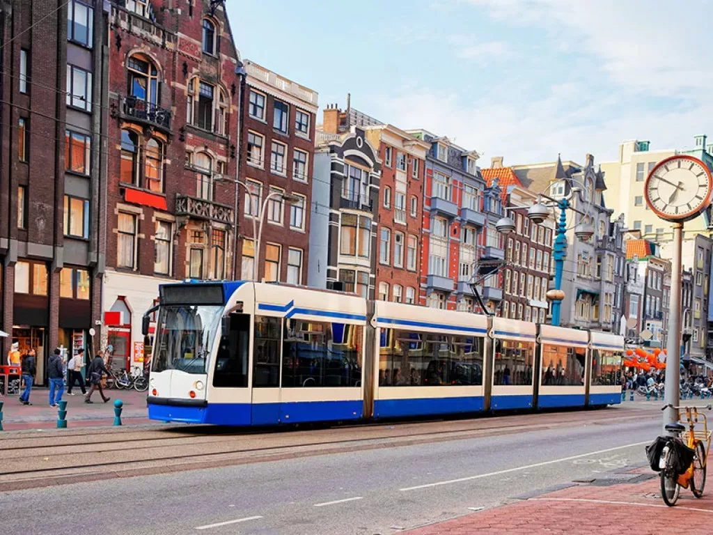
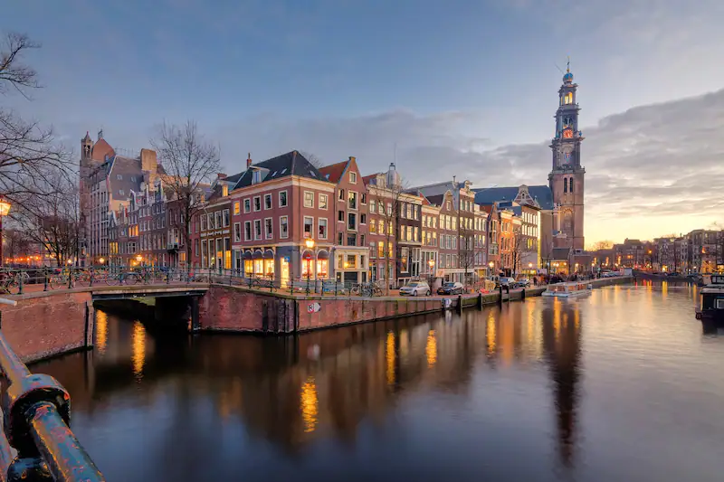
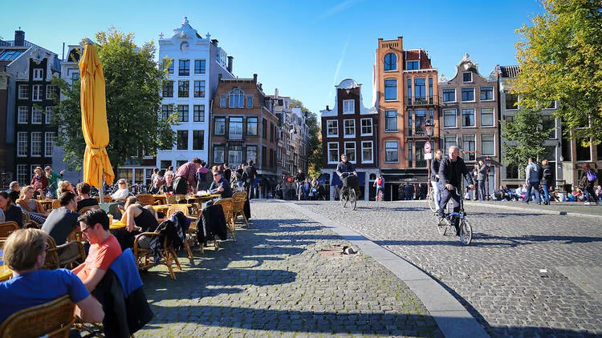

Bezienswaardigheden
- 
- 
- 
Why
Historische Schoonheid: Dwaal door de geplaveide straten en ontdek de rijke geschiedenis van Amsterdam. De architectuur langs de grachten getuigt van een ver verleden, en bezienswaardigheden zoals het Anne Frank Huis en het Rijksmuseum bieden diepgaande inzichten in de geschiedenis en cultuur van de stad. Schilderachtige Grachten: Amsterdam staat wereldwijd bekend om haar betoverende grachtenstelsel. Een rondvaart door deze grachten biedt niet alleen een ontspannende ervaring, maar ook een uniek perspectief op de stad. Culturele Diversiteit: De stad is een smeltkroes van culturen, met talloze musea, galeries en theaters. Van het Van Gogh Museum tot het moderne EYE Filmmuseum, Amsterdam heeft voor iedereen iets te bieden. Fietsvriendelijke Stad: Amsterdam is een van de meest fietsvriendelijke steden ter wereld. Huur een fiets en verken de stad op een ontspannen manier, zoals de lokale bevolking dat doet. Bruisend Nachtleven: Amsterdam staat ook bekend om haar levendige nachtleven. Van trendy bars tot historische cafés, de stad biedt een scala aan uitgaansgelegenheden voor elk type bezoeker. Innovatieve Keuken: Proef de diverse keuken van Amsterdam, van lokale gerechten tot internationale culinaire hoogstandjes. De straten zijn gevuld met gezellige eetgelegenheden en markten waar je kunt genieten van heerlijke maaltijden. Tolerante Atmosfeer: Amsterdam staat bekend om haar open en tolerante samenleving. Het roept een gevoel van vrijheid op en verwelkomt mensen van alle achtergronden. Of je nu geïnteresseerd bent in kunst, geschiedenis, culinaire ontdekkingen of gewoon wilt genieten van de unieke atmosfeer, Amsterdam heeft voor elk wat wils. Dus, pak je koffers en laat je meeslepen door de betovering van deze bruisende stad!